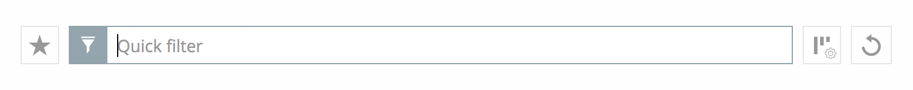
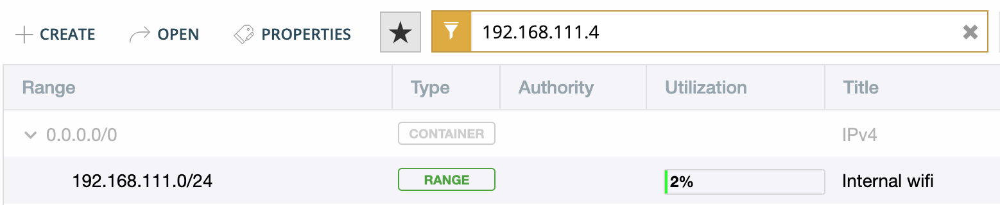

Quickfilter
Note
Quicksearch
You can toggle the Quickfilter to Quicksearch. Quicksearch will only highlight matching objects in the grid, but still display all other entries as well.
Introduction
The Quickfilter can be accessed in all sections of the Web Application that uses a list of items (for example in the DNS zone list in the DNS section).
The Quickfilter helps users to narrow down the results shown in each list after having selected an item in the filtering sidebar. Alternatively, it can be used solely by specifying columns and values for each column to be filtered by.
{kind=link}
How to use the Quickfilter
Tip
After typing into the Quickfilter or Quicksearch field, the number of results is shown and you can use the < and > buttons on the right to step through the matches.
The Quickfilter can be used as a free text search by simply entering a some string into the field. Then the value is matched to all rows that have columns whose value contain the string.
The column to match against can also be specified by providing the name of the column, a condition operator, and the queried string.
type=slave
name=^example
name=$arpa.
Conditional Operators
Operator |
Opposite operator |
||
|---|---|---|---|
=, == |
is equal |
!= |
is not equal |
>, >= |
larger than, larger than or equal |
<, <= |
smaller than, smaller than or equal |
=@ |
contains |
!@ |
does not contain |
=^ |
starts with |
!^ |
does not start with |
=$ |
ends with |
!$ |
does not end with |
=~ |
matches regular expression |
!~ |
does not match regular expression |
in(…) |
is equal to one of the values in the given list |
not in(…) |
does not match any of the values in the given list |
Two or more conditions can be combined using and, or, and () parenthesis.
Note
Date and time values as well as MAC addresses, need to be enclosed in quotes when using in the quickfilter.
Behavior in Networks
On the networks page, one way of finding the network which contains a specific IP address is typing the full IP address into the quickfilter.
{kind=link}